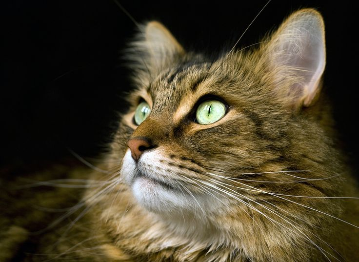

When we talk about pets, we talk about amazing animals! Animals are both a blessing and a responsibility! It's almost like taking care of your own child! Pets are wa wonderful thing to have! Pets teaches responsibility, trust, and brings up your spirits when you're down in the dumps! There are certain pets that you should purchase from our store! You don't need to buy the pets from our store, though! You can just browse our little selection of animals!
The Dog
The dog is one of the most popular pets that is adaptable to each situation. Diffferent species of dogs will conform to your situation! The dog can be named "Skippy" or even a human name like "Tom." The dog is man's best friend because the dog can feel what we feel, know when we are down, and know when we're in danger!
The Cat

The cat is another popular pet that everyone adores. The cat can be cute, cuddly, and overall a great addition to your family! The cat is a fluffy cuddle buddy that will melt your hearts once it gets comfortable! Cats are beautiful creatures!
The Bird
A pet bird is a hard animal to take care of. The bird is a delicate creature that, if taken care of correctly, can live for a long time depending on the bird you choose. Birds are magnificent creatures to take care of, but it's not reccommended for the little ones!
The Pig
A pet pig is a great choice! A pet pig will be good company and a great household pet! A trained pig will amaze your friends and family because a pig isn't ususally a domesticated pet. Having a pig will be an amazing experience and if you can't eat your food, the pig will gladly eat the rest of your food for you!
The Snake
A snake is a reptilian that would amaze your friends and scare the little ones! The exotic pet does require a lot of attention as it needs a warm enviornment to keep it's body temperature up. The snake is a mysterious creature that will sure to bring smiles and happiness! (Just make sure you get the ones that grow small, as some snake species will grow to be too big to take care of.)